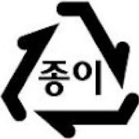
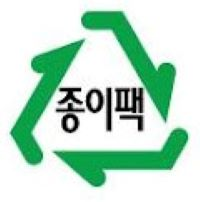
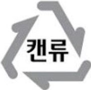
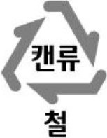
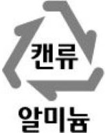
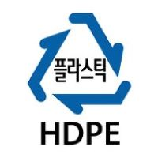
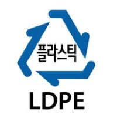
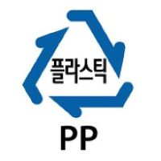
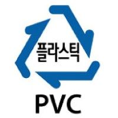
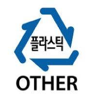

분리배출의 기본
분리배출이란?
사전적 정의로 '쓰레기 따위를 종류별로 나누어서 버림'입니다.
Tip
분리수거는 사전적 정의로 '종류별로 나누어서 버린 쓰레기 따위를 거두어 감.'이기 떄문에 분리 배출이 올바른 표현이라 할 수 있습니다.
분리배출을 해야하는 이유
분리배출을 하게 되면 환경보호 및 자원 절약이 됩니다.
분리배출의 기본 4가지
비운다.
- 용기 안에 담겨있는 내용물은 깨끗이 비우고 배출합니다.
헹군다.
- 재활용품에 묻어있는 이물질, 음식물 등은 닦거나 한 번 헹궈서 배출합니다.
분리한다.
- 라벨 등의 다른 재질 부분은 제거하여 배출합니다.투명 플라스틱과 유색 프라스틱을 구분해서 버려줍니다.
섞지않는다.
- 종류별, 재질별로 구분하여 분리수거함으로 배출합니다.
분리배출의 표시
궁금한 표시에 마우스를 가져다 대보세요.
기타 종이류 : 이물질 없애서">    
    